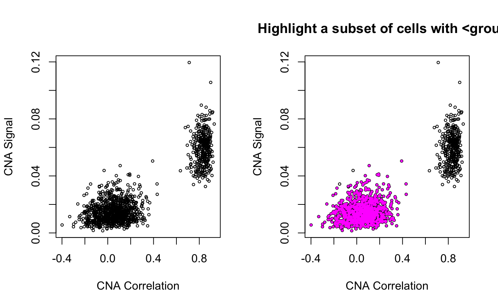

Prepare your data
Set your genome with useGenome()
useGenome('hg19')
#> Genome has been set to hg19
retrieveGenome()
#> Retrieving: hg19
#> # A tibble: 33,575 x 8
#> symbol start_position end_position chromosome_name arm band strand
#> <chr> <dbl> <dbl> <fct> <fct> <chr> <int>
#> 1 DDX11… 11869 14412 1 1p p36.… 1
#> 2 WASH7P 14363 29806 1 1p p36.… -1
#> 3 MIR13… 29554 31109 1 1p p36.… 1
#> 4 FAM13… 34554 36081 1 1p p36.… -1
#> # … with 33,571 more rows, and 1 more variable: ensembl_gene_id <chr>Infer CNAs and plot a heatmap
Infer cells’ CNA profiles with infercna()
args(infercna)
#> function (m, refCells = NULL, window = 100, range = c(-3, 3),
#> n = NULL, noise = 0.1, center.method = "median", isLog = FALSE,
#> verbose = TRUE)
#> NULL
cna = infercna(m = m, refCells = refCells, n = 5000, noise = 0.1, isLog = TRUE, verbose = FALSE)
cnaM = cna[, !colnames(cna) %in% unlist(refCells)]
Plot heatmap with cnaPlot()
args(cnaPlot)
#> function (cna, limits = c(-1, 1), ratio = 0.5, cols = heatCols,
#> x.name = "Chromosome", y.name = "Cell", legend.title = "Inferred CNA\n[log2 ratio]",
#> x.hide = c("13", "18", "21", "Y"), orderCells = F, order.with = NULL,
#> euclid.dist = F, angle = NULL, x.angle = NULL, y.angle = 0,
#> axis.rel = 1, base.size = 12, axis.title.size = 12, axis.text.size = 11,
#> base.col = "#073642", title = NULL, subtitle = NULL, caption = NULL,
#> text.size = 12, y.hide = NULL, tile.size = 0.1, tile.col = NULL,
#> legend.position = "right", legend.height = 2, legend.width = 0.6,
#> legend.rel = 0.9, legend.colour = "black", legend.breaks = NULL,
#> legend.labels = NULL, legend.justification = "top", legend.title.position = "bottom",
#> legend.title.angle = NULL, legend.title.rel = 0.9)
#> NULL
obj = cnaPlot(cna = cnaM,
orderCells = TRUE,
subtitle = 'Copy-Number Aberrations in a patient with Glioblastoma')
names(obj)
#> [1] "p" "data"
obj$data
#> # A tibble: 1,665,660 x 3
#> Gene Cell CNA
#> <fct> <fct> <dbl>
#> 1 WASH7P MGH125-P2-H01 0
#> 2 NOC2L MGH125-P2-H01 0
#> 3 ISG15 MGH125-P2-H01 0
#> 4 SDF4 MGH125-P2-H01 0
#> # … with 1,665,656 more rows
obj$p
Ordering cells in cnaPlot()
In cases where you can see the subclones in the heatmap but don’t yet have the subclone assignments to direct the cell clustering, you can instead give a set of chromosome and chromosome arms that you would like the clustering to use. In the example above, we probably want the cells belonging to the presumed subclones (chromosome 2, chromosome arm 4p, etc) to be grouped together. We can specify this using the order.with argument in infercna::cnaPlot:
obj = cnaPlot(cna = cnaM,
orderCells = TRUE,
order.with = c(2, "4p", 7, 10, 12, 13, 15),
subtitle = 'Copy-Number Aberrations in a patient with Glioblastoma')
obj$p
Find malignant cells
In the above section, we filtered out the infercna::refCells that we know are normal prior to looking at the CNA heatmap. In reality, our reference normal cells will only comprise a subset of all normal cells in the data, and we will need to identify the remaining ones to exclude them from downstream analyses concerning the malignant cells only.
infercna defines two parameters, infercna::cnaCor and infercna::cnaSignal that quantify the extent of copy-number aberrations in individual cells and thus help to separate the malignant and non-malignant subsets.
Compute cnaSignal() and cnaCor()
“CNA signal” reflects the overall extent of CNAs. It’s defined as the mean of the squares of CNA values across the genome and should therefore accentuate genome-wide differences in CNA profiles between malignant and non-malignant cells.
Note: Here, and generally speaking, we use CNA signal values per cell, but they can also be useful per gene.
“CNA correlation” refers to the correlation between the CNA profile of each cell and the average CNA profile of all cells. Best results are seen when correlating cells to the average CNA profile of cells from the corresponding tumour and, if possible, excluding from the average those already classified as non-malignant.
args(cnaCor)
#> function (cna, cor.method = "pearson", threshold = NULL, bySample = F,
#> samples = NULL, sep = "-|_", excludeFromAvg = NULL)
#> NULLSome note-worthy arguments in the call to infercna::cnaCor():
<samples>: the names of tumours that will be used to split the matrix and correlate cells to their tumour’s average profile.<excludeFromAvg>: names of the (normal) cells to be excluded from the average profile.
Visualise CNA Signal and Correlation with cnaScatterPlot()
Plotting cnaCor against cnaSignal for all cells is a good first approximation to the malignant and non-malignant groups. infercna::cnaScatterPlot simply integrates these two function calls and their respective parameters into one function, and plots the results.
args(cnaScatterPlot)
#> function (cna, cor.method = "pearson", threshold = NULL, cor.threshold = threshold,
#> signal.threshold = threshold, group = NULL, group.col = "magenta",
#> hline = NULL, vline = NULL, bySample = FALSE, samples = NULL,
#> sep = "-|_", excludeFromAvg = NULL, ...)
#> NULL
layout(t(1:2))
cnaScatterPlot(cna = cna, samples = 'MGH125', excludeFromAvg = unlist(refCells))
cnaScatterPlot(cna = cna, samples = 'MGH125', excludeFromAvg = unlist(refCells), group = unlist(refCells), main = 'Highlight a subset of cells with <group>')
Let’s quickly go over the arguments:
threshol Below is the result default
cnaCorandcnaSignalparameters, with no specification of:threshold: to reduce top genessamples:
layout(t(1:3))
cnaScatterPlot(cna = cna, threshold = .9, samples = 'MGH125', group = unlist(refCells), excludeFromAvg = unlist(refCells))
Calculate using top CNA-Signal genes only, with cnaHotspotGenes()
You may have noticed the <threshold> argument, both in infercna::cnaSignal and in infercna::cnaCor. If set to a value i between 0 and 1, these functions internally call infercna::cnaHotspotGenes(), which does two things:
Compute CNA signal values for each gene
Return genes with values of CNA signal in the top
1 - **i** %
Extra functionality
There are many additional functions that are useful when conducting an analysis. We will explore these in future tutorials, but below is a selected list of some.
Split, Filter and Order vectors or matrices by Chromosome (Arms)
genesByChr = splitGenes(rownames(m), by = 'chr')
lengths(genesByChr)
#> 1 2 3 4 5 6 7 8 9 10 11 12 13 14 15 16 17 18
#> 844 593 502 295 432 391 473 297 313 262 458 466 153 269 240 354 490 115
#> 19 20 21 22 X Y
#> 549 238 86 186 305 5
datByChr = splitGenes(m, by = 'arm')
names(datByChr)
#> [1] "1p" "1q" "2p" "2q" "3p" "3q" "4p" "4q" "5p" "5q" "6p"
#> [12] "6q" "7p" "7q" "8p" "8q" "9p" "9q" "10p" "10q" "11p" "11q"
#> [23] "12p" "12q" "13q" "14q" "15q" "16p" "16q" "17p" "17q" "18p" "18q"
#> [34] "19p" "19q" "20p" "20q" "21p" "21q" "22q" "Xp" "Xq" "Yp" "Yq"